Hello again! For our final DIGIT 100 assignment, I will be doing a Game Analysis on Cold Front by racheldrawsthis.
Overview and Introduction
Cold Front is a 2d horror/narrative RPG maker game that was created for a gamejam. The story follows Augustine Orlov as he attempts to understand the difficult friendship(or more than friendship) between him and his ‘best friend’, Winnie Bosko. Throughout Augustine or, better known as August’s life, he was a popular kid. He got along really well with other people. Winnie was not the same, Winnie didn’t have many friends, only after meeting August, after their parents forced them to hang out with each other, did he begin to open up to the world. It’s implied that Winnie was heavily inspired by August’s behavior, and August begins to believe that Winnie’s entire personality was copied from him. This thought is a driving factor in the ever-widening gap between August and Winnie throughout the game. The game is only about 40 minutes to an hour long, and has two endings.
Characters!
Augustine "August/Auggie" Orlov
August is the main protagonist, and the character we follow throughout the game. He is very outgoing and is seemingly quite confident! Although August fails to acknowledge the fact that he is secretly extremely insecure and has a ton of trust issues. He is an extreme overthinker, but is extremely empathetic towards others. His internal conflict with Winnie drastically affected his life, to the point of pushing away his other friends.
Winnie Bosko
Winnie, at first, is the shy deuteragonist who has no friends. He latches onto August when they meet, and overtime he comes out of his shell, revealing his eccentric and bright nature. He is very comedic and off the wall, seemingly shows off about his accomplishments/friends to August. He is a bit cynical but it may not be completely intentional. Bad at confrontation.
The Beast
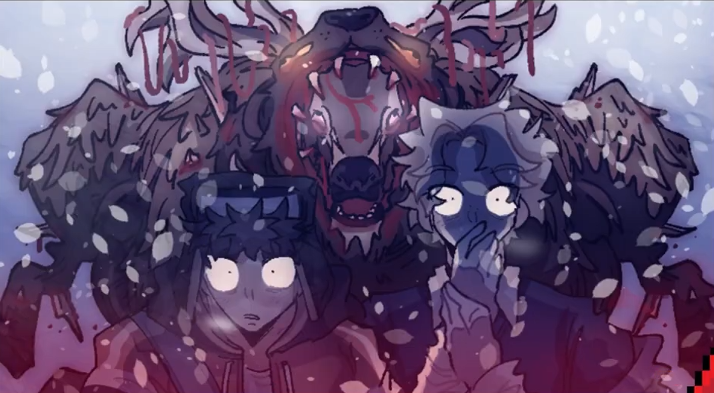
While not officially a character. I consider this monster to be the antagonist. Not because this character provokes them, but because this character is more of the complicated evil that lies within the friendship of August and Winnie. This “monster” is seemingly a physical manifestation of their thoughts, attacking and pursuing them through a portion of the game. The monster is also an amalgamation of their two representative stuffed animals, A bear and a deer.
Kumu Network
I mapped a Kumu network to try to visualize how the different elements in the game impacted August and connected with the rest of the story. There is a lot of information regarding the characters and events within each of the selectable shapes on this.
General Plot/Walkthrough
Disposition
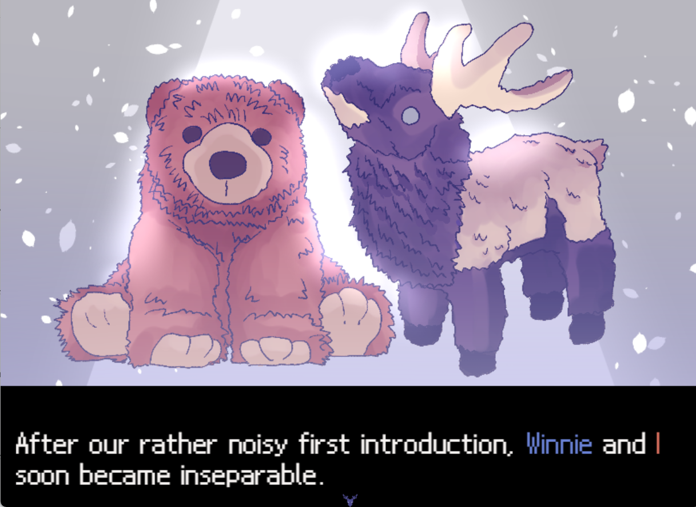
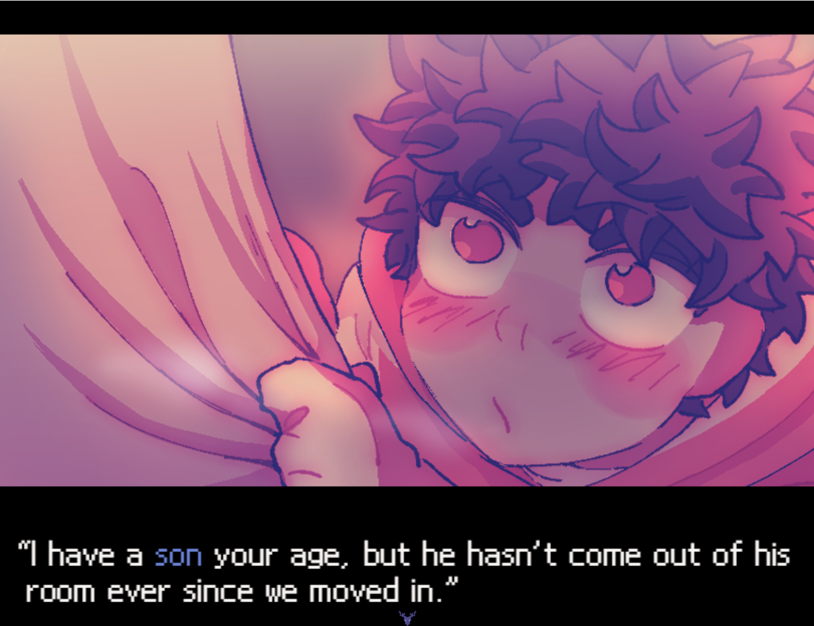
The game begins with a flashback, introducing us to August, and showing us how he met Winnie. Winnie is extremely reclusive, crying, and, as shown in the image, “has not left his room since we moved here”. August immediately comforts him, showcasing his empathetic and outgoing nature. Winnie instantly realized that this is a person he can trust, thus leading into their friendship. A short cutscene describes them as inseparable, “We went and did everything together”& “Same street, same school, same class, same lectures, same clubs, same interests, same hobbies”. It is generally implied that they might have been more than friends, this game is frequently recognized by the BL community online.
Disposition
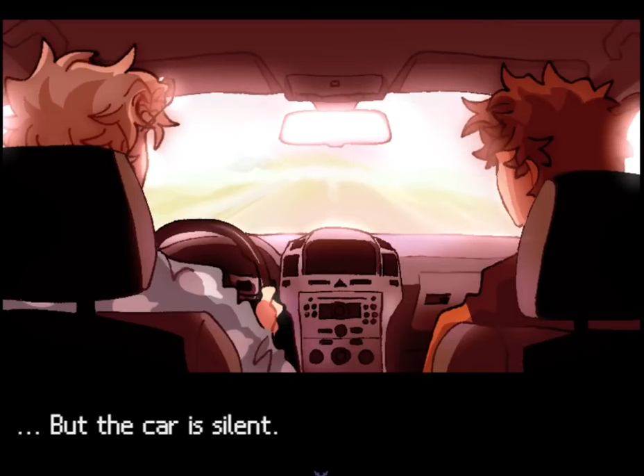
We are then introduced to the conflict in the plot. Winnie suddenly stopped talking to August one day. This left August absolutely bewildered, completely unaware of why Winnie would have abandoned him like that. It is then brought to our attention that Winnie is to move far away tomorrow, and August’s mother has told him to go on a drive with Winnie. Awkward!!
They begin to communicate with each other, Winnie explains that hes moving away because he got accepted into the college that **they** wanted to attend together.. Only then realizing that August didn’t get in. It is also explained that there were a ton of people crying outside of Winnie’s house that morning, this was because all his friends were suddenly upset that Winnie was leaving. This knowledge makes August very jealous and upset. It’s amplifying the idea that Winnie was moving on to “better things” and leaving August behind, which left him very insecure, sort’ve internally beating himself up.
A small reminder that this game is advertised as a Horror Narrative game, and while there aren’t explicitly jumpscares or anything, the developers often sneak these disturbing panels in the middle of conversations/text. Which.. Honestly might as well be jumpscares.
Moving on, I don’t truly believe that Winnie said anything remotely close to this, while it’s not explicitly stated (yet), I think it’s safe to be skeptical that maybe August is interpreting things incorrectly. This is where the “mental conflicts” I've mentioned come in. A lot of the issues stem from small incidents that August has overthought about for the past year. This manifests into these jumpscare-esque hallucinations that August experiences. But, of course, it doesn’t help that Winnie’s attitude is very lax, and he doesn’t seem to be very considerate of how August might feel about the things Winnie is flaunting about.
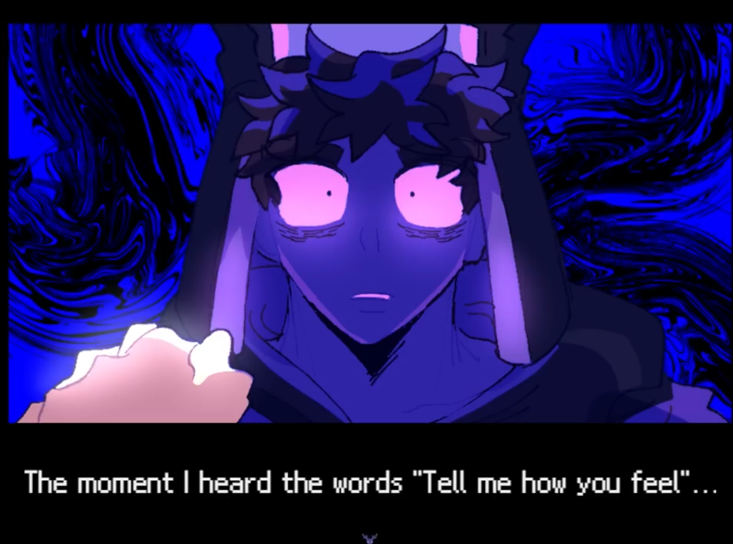
This leads into the main conflict of the game. In the midst of their argument they discover that they are in the middle of a snowstorm, hence the title Cold Front. Keep in mind … It's currently July. The car has died, and they are stranded in the center of a road, not recognizing where they are. Without explaining all of the intricate details of the situation, we are pursued by a monster, eventually separating August and Winnie. During this time August is plagued by the overwhelming nature of this situation coupled with his Winnie-fueled anxiety. He is absolutely destroyed and paints Winnie as an absolute villain. He even believes that Winnie is trying to kill him. Eventually we find ourselves back at the original house, where an ambulance can be heard. August is seemingly recalling his memories, going through their entire friendship to see what went wrong, and in this moment he remembers that he had fallen down the stairs in front of Winnie. He begins to tell himself that Winnie may have pushed him, or that he purposefully had abandoned August at the bottom of the staircase. In all of this reflection, Winnie reappears, this leads into the major ‘choice’ of the game, you can either push Winnie down the stairs.. Killing him.. (in ‘self defense’” or, you just don’t. Killing him leads to the bad ending, where you sort’ve celebrate Winnie’s death, never truly understanding his feelings, while choosing not to leads to the very happy good ending, where they live happily ever after. It kinda directly segues into a heart to heart where they address why they stopped talking to each other.
It’s all very touching, but essentially, in the good ending, Winnie’s move is postponed and they stay together. That’s sort’ve where it ends.
My Thoughts
Considering that this game is made for a game jam, I think that it has done an incredible job at storytelling and honestly keeping it scary. The audio throughout the game is honestly disturbing and without it, there wouldn’t have been a lot of emotion in the scenes, meaning, I don’t really know if it would’ve been scary if the audio wasn’t setting the tone. My critiques with it are that it is very rushed, again this was for a gamejam so that WAS the point. But there are parts where it feels like it’s missing dialogue, or that the point of a conversation was found too quickly. Specifically when August is choosing to either literally kill winnie or not, if you choose no, they are immediately hugging and crying afterwards, like it was soo fast. It’s honestly a bit funny. I also think that most of this game is spent reading and there aren’t really any gameplay mechanics except for one nearly impossible chase scene and a couple quick time events. I’m not necessarily complaining about it, but there are maybe 4 times in total where you are actually moving around a map, and the experience there is more so just for environmental/setting purposes. There is also an inventory, but there is only one small time where the inventory has a purpose, and it’s for the 4 seconds that you are carrying a key. Other than that, there aren’t really any interactable items. And beyond that! There are only like 3-4 choices you make throughout the game, there is so much potential for more endings here, it’s a bit of a shame. Below is a screenshot of one of the scenes where you can walk around the cold road.. I have the same car !!
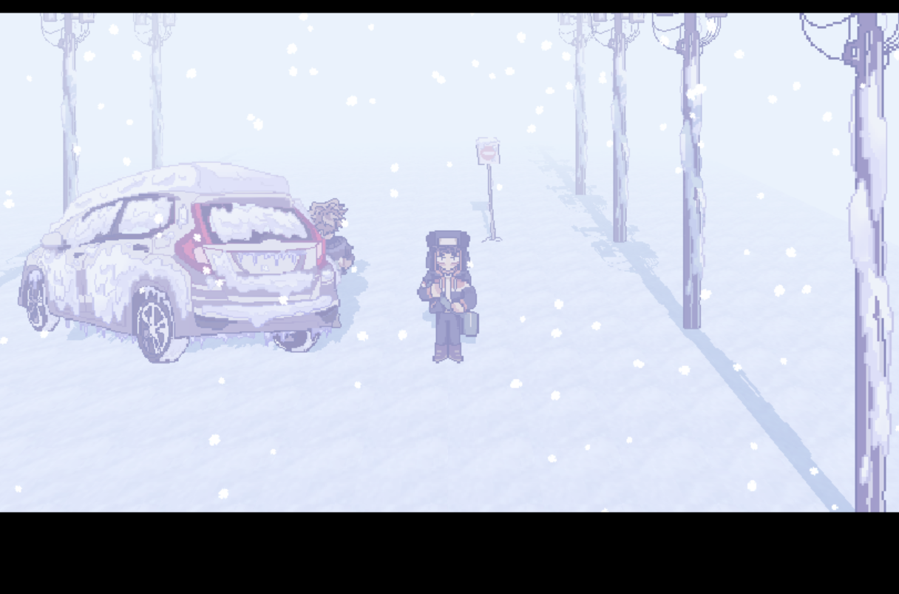
Screenshot Gallery
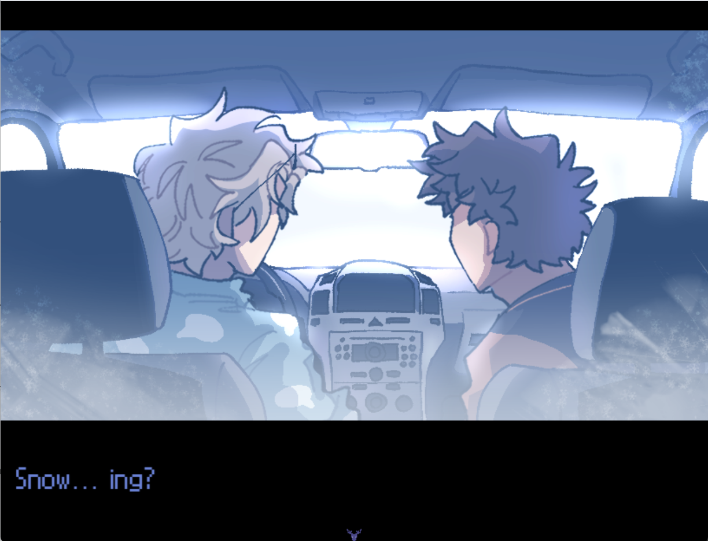
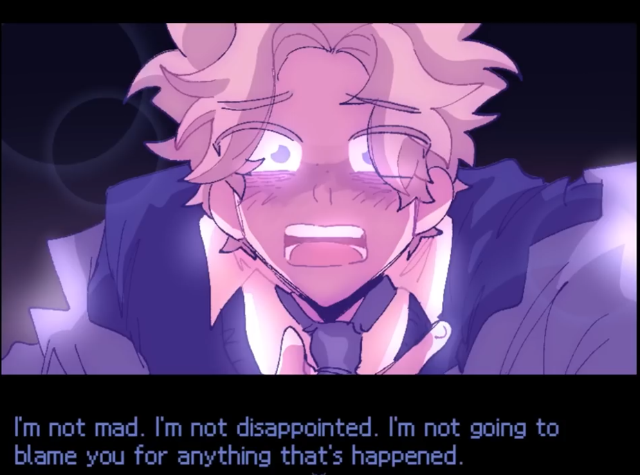
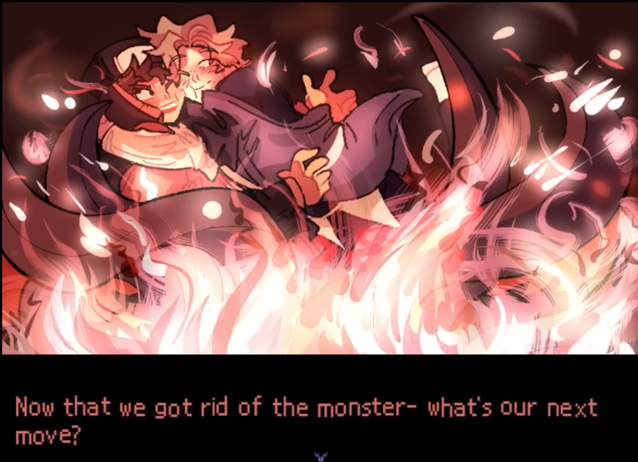
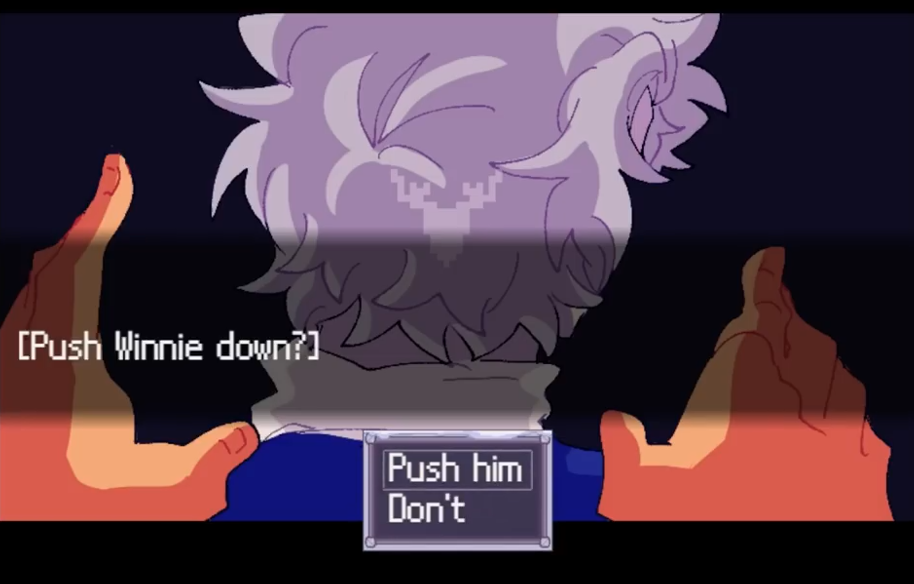
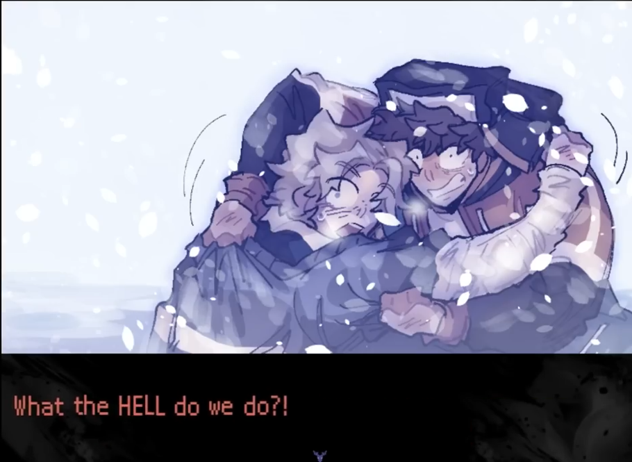
Final Comments
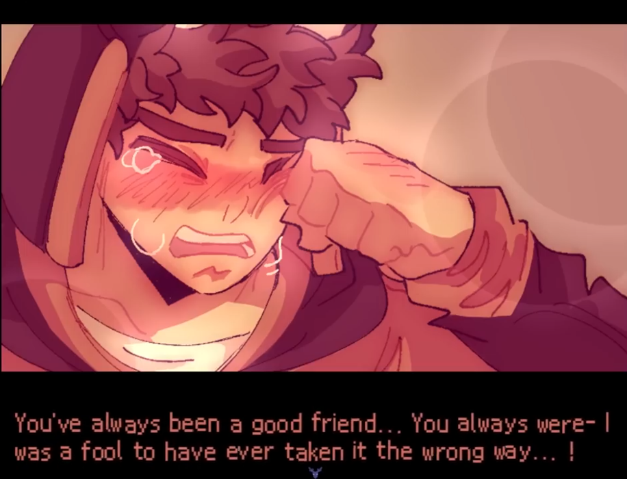
I really appreciate this story for how cohesive it is as a finished product, even if the gameplay felt a little stale overall. I truly hope my negative comments didn't outweigh the positives, because I do love this game. The audio and artistry makes for an interesting experience. The characters are incredibly expressive and unique and despite their complicated situation, still mesh perfectly. It’s hard to not feel somewhat attached to them as characters. There is also so much symbolism hidden throughout the game in the small interactions and events, I just really appreciate how deep the story is for such a small project, it really feels like each moment is important. It’s short but so sweet. I think that if this game was a somewhat bigger project, say, not a gamejam, there would probably be a lot more interactive gameplay. But that doesn’t take from the fact that it was a great story, which I think is the most important part of any narrative, of course.
Thank you for reading :)
Soundtrack
Below is an embed/link to the soundtrack of the game. It was quite calming, but also unnerving at times. This is the physical link in case the embed stops working